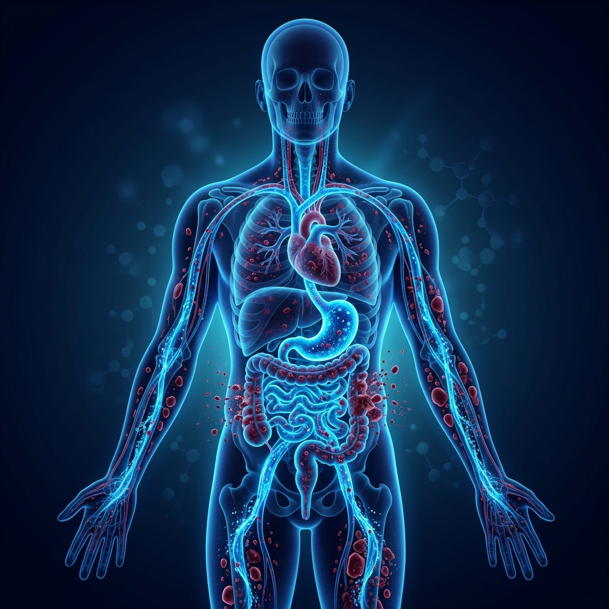
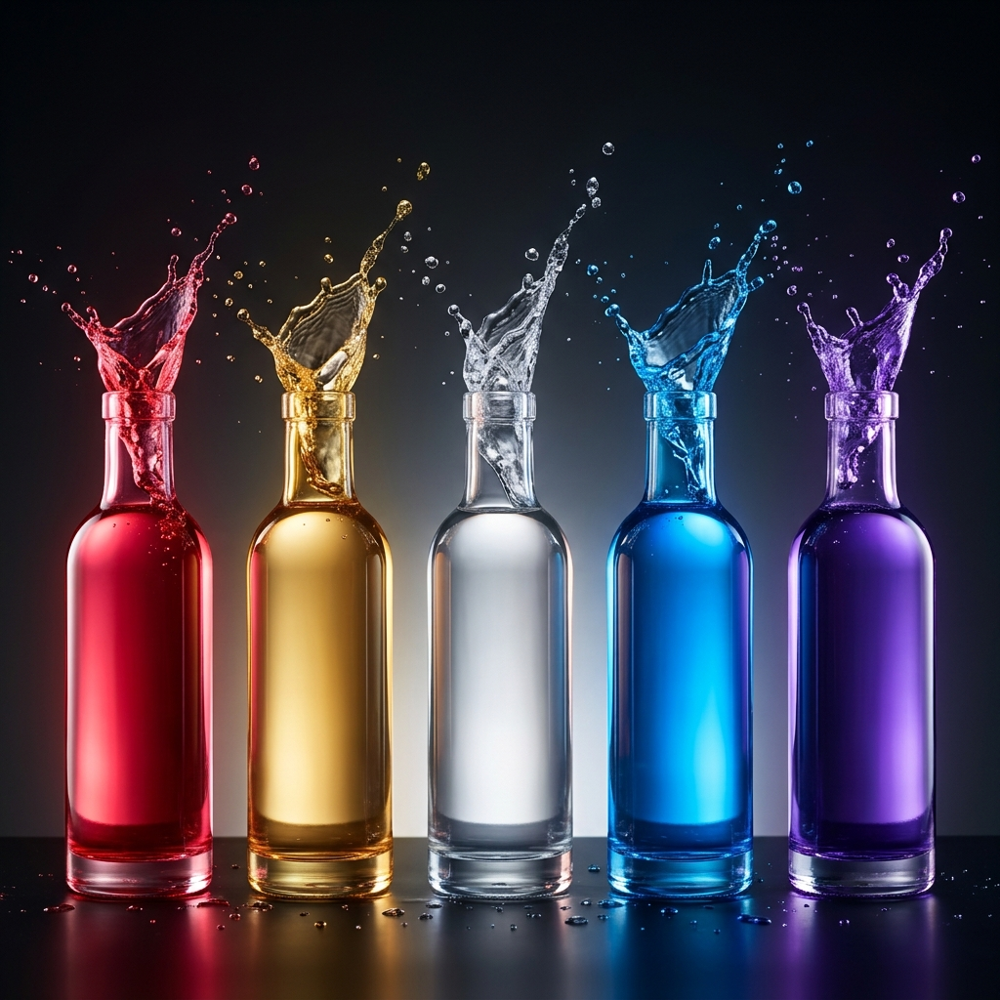

No compramos una máquina por el simple hecho de beber agua de calidad. Lo hacemos porque nuestro entorno nos está robando nuestras reservas alcalinas cada minuto, y necesitamos una herramienta infalible para recuperarlas.
"Si el ácido de nuestro estómago tiene un pH extremadamente ácido (entre 1.5 y 3.0 para digerir comida), entonces el agua alcalina (pH 9.5) se neutralizará en el momento en que toque el estómago, haciéndola inútil."
Este es el argumento más común de los escépticos y, sorprendentemente, de algunos profesionales médicos no actualizados en fisiología nutricional. Se imaginan el estómago como un tanque lleno de ácido de batería esperando neutralizar todo lo que entra.
Falso. La realidad fisiológica es mucho más sofisticada. El estómago es un órgano que está vacío y neutro la mayor parte del tiempo, y fabrica ácido clorhídrico sólo bajo demanda, es decir, cuando detecta alimento o un cambio de pH y necesita digerir.
Cuando bebes Agua Kangen (pH 9.5), el pH del estómago se eleva. El cuerpo inmediatamente detecta esto y ordena a las células parietales de la pared gástrica que bombeen ácido clorhídrico (HCl) para devolver el nivel a la normalidad alcalina que necesita la digestión fisiológica. Y aquí es donde ocurre el milagro metabólico.

¿De dónde saca el cuerpo el ácido clorhídrico? No lo inventa de la nada. Tus tejidos lo fabrican combinando agua, dióxido de carbono y la sal de tu sangre.
La reacción química en la pared celular del estómago (Dr. Sang Whang):
Este es el ácido gástrico que se produce. Es segregado hacia adentro del estómago para cumplir su función de digestión y neutralización del agua alcalina que acabamos de beber.
¡Aquí está el secreto! Por cada molécula de ácido generada hacia el estómago, se produce una molécula equivalente del buffer alcalino más importante del cuerpo. Este bicarbonato va directamente a tu torrente sanguíneo.
En resumen: No bebes agua alcalina para alterar mágicamente tu sangre (los pulmones y riñones regulan la sangre estrictamente a pH 7.365). Bebes agua alcalina para provocar fisiológicamente que tu propio estómago segregue una ola natural de bicarbonatos estabilizadores hacia tu torrente sanguíneo.

Tu cuerpo es una máquina perfecta empeñada en una sola supervivencia a corto plazo: mantener tu sangre exactamente entre 7.35 y 7.45. Si baja de 7.20 o sube de 7.60, mueres.
Pero vivimos en un entorno profundamente ácido: el estrés mental segrega cortisol (ácido), procesar carne y azúcares deja ceniza (ácida), los refrescos tienen un pH de 2.5. Para mantener la sangre intacta a 7.365, el cuerpo debe realizar un esfuerzo extremo.
¿Cuál es ese esfuerzo?
Tu cuerpo debe robar reservas alcalinas (Calcio, Magnesio) de tus huesos, dientes y tejidos para neutralizar la acidez circundante. Es lo que el Nobel de Medicina Otto Warburg y miles de endocrinos denuncian como el entorno ideal para patologías degenerativas.
Míralo de esta forma: un ionizador médico Enagic no es una compra. Es establecer un fondo de inversión indexado para la biología de tu familia durante los próximos 15 a 25 años.
No puedes controlar el estrés emocional del día a día, la polución o la acidez natural de la vida moderna. Lo que sí puedes controlar es proporcionarle a tu cuerpo, cada vez que bebes simplemente agua, el arsenal defensivo de alcalinidad y antioxidantes que frenará el deterioro fisiológico celular.